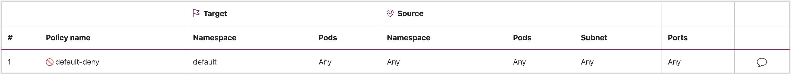

網絡安全¶
網絡安全有幾個方面。第一個涉及應用限制網絡流量在服務之間流動的規則。第二個涉及在傳輸過程中對流量進行加密。在EKS上實施這些安全措施的機制是多樣的,但通常包括以下項目:
流量控制¶
- 網絡策略
- 安全組
網絡加密¶
- Service Mesh
- 容器網絡接口(CNIs)
- Ingress控制器和負載均衡器
- Nitro實例
- 使用cert-manager的ACM私有CA
網絡策略¶
在Kubernetes集群中,默認情況下允許所有Pod到Pod的通信。雖然這種靈活性可能有助於促進實驗,但它不被認為是安全的。Kubernetes網絡策略為您提供了一種機制,可以限制Pod之間(通常稱為East/West流量)以及Pod和外部服務之間的網絡流量。Kubernetes網絡策略在OSI模型的第3層和第4層運行。網絡策略使用pod、命名空間選擇器和標籤來識別源和目標pod,但也可以包括IP地址、端口號、協議或這些的組合。網絡策略可以應用於pod的入站或出站連接,通常稱為入口和出口規則。
通過Amazon VPC CNI插件的原生網絡策略支持,您可以實施網絡策略來保護Kubernetes集群中的網絡流量。這與上游Kubernetes網絡策略API集成,確保兼容性和遵守Kubernetes標準。您可以使用上游API支持的不同標識符來定義策略。默認情況下,允許所有進出pod的流量。指定了具有policyType Ingress的網絡策略時,只允許從pod的節點和入口規則允許的連接進入pod。出口規則也是如此。如果定義了多個規則,則在做出決定時會考慮所有規則的聯合。因此,評估順序不會影響策略結果。
Attention
首次配置EKS集群時,VPC CNI網絡策略功能默認未啟用。確保您部署了受支持的VPC CNI附加組件版本,並在vpc-cni附加組件上將ENABLE_NETWORK_POLICY標誌設置為true以啟用此功能。請參考Amazon EKS用戶指南以獲取詳細說明。
建議¶
開始使用網絡策略 - 遵循最小特權原則¶
創建默認拒絕策略¶
與RBAC策略一樣,建議遵循最小特權訪問原則使用網絡策略。首先創建一個拒絕所有策略,限制命名空間內的所有入站和出站流量。
apiVersion: networking.k8s.io/v1
kind: NetworkPolicy
metadata:
name: default-deny
namespace: default
spec:
podSelector: {}
policyTypes:
- Ingress
- Egress

Tip
上圖由Tufin的網絡策略查看器創建。
創建一個允許DNS查詢的規則¶
當您有了默認拒絕所有的規則後,您可以開始添加其他規則,例如允許pod查詢CoreDNS進行名稱解析的規則。
apiVersion: networking.k8s.io/v1
kind: NetworkPolicy
metadata:
name: allow-dns-access
namespace: default
spec:
podSelector:
matchLabels: {}
policyTypes:
- Egress
egress:
- to:
- namespaceSelector:
matchLabels:
kubernetes.io/metadata.name: kube-system
podSelector:
matchLabels:
k8s-app: kube-dns
ports:
- protocol: UDP
port: 53

逐步添加規則,有選擇地允許命名空間/pod之間的流量¶
了解應用程序的要求,並根據需要創建細粒度的入口和出口規則。下面的示例展示了如何限制client-one的入口流量到端口80的app-one。這有助於最小化攻擊面,降低未經授權訪問的風險。
apiVersion: networking.k8s.io/v1
kind: NetworkPolicy
metadata:
name: allow-ingress-app-one
namespace: default
spec:
podSelector:
matchLabels:
k8s-app: app-one
policyTypes:
- Ingress
ingress:
- from:
- podSelector:
matchLabels:
k8s-app: client-one
ports:
- protocol: TCP
port: 80

監控網絡策略執行¶
- 使用網絡策略編輯器
- 網絡策略編輯器提供可視化、安全評分、從網絡流量日誌自動生成
- 以交互方式構建網絡策略
- 審核日誌
- 定期審查您EKS集群的審核日誌
- 審核日誌提供大量有關在集群上執行的操作的信息,包括對網絡策略的更改
- 使用這些信息跟踪您的網絡策略隨時間的變化,並檢測任何未經授權或意外的變化
- 自動化測試
- 通過創建一個與生產環境相似的測試環境,並定期部署試圖違反網絡策略的工作負載來實施自動化測試。
- 監控指標
- 配置您的可觀察性代理程序,以刮取VPC CNI節點代理程序的Prometheus指標,這允許監控代理程序的健康狀況和SDK錯誤。
- 定期審核網絡策略
- 定期審核您的網絡策略,以確保它們符合當前的應用程序要求。隨著您的應用程序的發展,審核可以讓您有機會刪除冗餘的入口和出口規則,並確保您的應用程序沒有過多的權限。
- 使用Open Policy Agent(OPA)確保網絡策略存在
- 使用如下所示的OPA策略,確保在引入應用程序pod之前網絡策略始終存在。此策略拒絕引入具有
k8s-app: sample-app標籤的k8s pod,如果不存在相應的網絡策略。
package kubernetes.admission
import data.kubernetes.networkpolicies
deny[msg] {
input.request.kind.kind == "Pod"
pod_label_value := {v["k8s-app"] | v := input.request.object.metadata.labels}
contains_label(pod_label_value, "sample-app")
np_label_value := {v["k8s-app"] | v := networkpolicies[_].spec.podSelector.matchLabels}
not contains_label(np_label_value, "sample-app")
msg:= sprintf("The Pod %v could not be created because it is missing an associated Network Policy.", [input.request.object.metadata.name])
}
contains_label(arr, val) {
arr[_] == val
}
故障排除¶
監控vpc-network-policy-controller、node-agent日誌¶
啟用EKS控制平面控制器管理器日誌以診斷網絡策略功能。您可以將控制平面日誌流式傳輸到CloudWatch日誌組,並使用CloudWatch日誌洞察執行高級查詢。從日誌中,您可以查看哪些pod端點對象被解析為網絡策略,策略的協調狀態,以及調試策略是否按預期工作。
此外,Amazon VPC CNI允許您啟用從EKS工作節點向Amazon Cloudwatch收集和導出策略執行日誌。啟用後,您可以利用CloudWatch容器洞察提供有關網絡策略使用情況的洞察。
Amazon VPC CNI還提供了一個SDK,提供了一個與節點上的eBPF程序交互的接口。在部署aws-node到節點時,會安裝SDK。您可以在節點上的/opt/cni/bin目錄中找到SDK二進制文件。啟動時,SDK提供對基本功能的支持,如檢查eBPF程序和映射。
記錄網絡流量元數據¶
AWS VPC Flow Logs捕獲通過VPC流動的流量的元數據,如源和目標IP地址和端口以及接受/丟棄的數據包。這些信息可以被分析,以查找VPC內部資源之間的可疑或異常活動。但是,由於pod的IP地址經常變化,因為它們被替換,Flow Logs可能不足以單獨使用。Calico Enterprise擴展了Flow Logs,添加了pod標籤和其他元數據,使得解釋pod之間的流量更加容易。
安全組¶
EKS使用AWS VPC安全組(SG)來控制Kubernetes控制平面和集群工作節點之間的流量。安全組也用於控制工作節點之間、其他VPC資源和外部IP地址之間的流量。當您配置EKS集群(Kubernetes版本1.14-eks.3或更高版本)時,會自動為您創建一個集群安全組。此安全組允許受管節點組與EKS控制平面之間的無限制通信。為了簡單起見,建議您將集群SG添加到所有節點組,包括非受管節點組。
在Kubernetes版本1.14和EKS版本eks.3之前,EKS控制平面和節點組配置了單獨的安全組。控制平面和節點組安全組的最小和建議規則可以在https://docs.aws.amazon.com/eks/latest/userguide/sec-group-reqs.html找到。_控制平面安全組_的最小規則允許來自工作節點SG的443端口入站。這個規則是允許kubelet與Kubernetes API服務器通信的。它還包括端口10250的出站流量到工作節點SG;10250是kubelet監聽的端口。同樣,_節點組_的最小規則允許來自控制平面SG的10250端口入站和443端口出站。最後,還有一條允許節點組內部節點之間無限制通信的規則。
如果您需要控制集群內部服務與外部服務(如RDS數據庫)之間的通信,請考慮pod的安全組。使用pod的安全組,您可以將現有的安全組分配給一組pod。
Warning
如果在創建pod之前引用一個不存在的安全組,pod將無法調度。
您可以通過創建一個SecurityGroupPolicy對象並指定PodSelector或ServiceAccountSelector來控制哪些pod被分配到一個安全組。將選擇器設置為{}將把SG引用的SG分配給命名空間中的所有pod或所有服務帳戶。在實現pod的安全組之前,請務必熟悉所有注意事項。
Important
如果您使用pod的SG,必須創建允許端口53出站到集群安全組的SG。同樣,必須更新集群安全組,以接受來自pod安全組的53端口入站流量。
Important
安全組的限制仍然適用於pod的安全組,所以要謹慎使用。
Important
您必須為pod配置的所有探測創建來自集群安全組(kubelet)的入站流量規則。
Important
pod的安全組依賴於一個名為ENI trunking的功能,該功能是為了增加EC2實例的ENI密度。當一個pod被分配到一個SG時,VPC控制器會將一個來自節點組的分支ENI與pod關聯起來。如果在pod被調度時節點組中沒有足夠的分支ENI可用,pod將保持pending狀態。一個實例可以支持的分支ENI數量因實例類型/系列而異。請參見https://docs.aws.amazon.com/eks/latest/userguide/security-groups-for-pods.html#supported-instance-types以獲取更多詳細信息。
雖然pod的安全組提供了一種AWS本地的方式來控制集群內部和外部的網絡流量,而無需依賴策略守護進程,但也有其他選擇。例如,Cilium策略引擎允許您在網絡策略中引用DNS名稱。Calico Enterprise包括一個將網絡策略映射到AWS安全組的選項。如果您實施了像Istio這樣的服務網格,您可以使用一個出口網關來限制到特定完全限定域名或IP地址的網絡出口流量。有關此選項的更多信息,請閱讀關於Istio中出口流量控制的三篇系列文章。
何時使用網絡策略vs pod的安全組?¶
何時使用Kubernetes網絡策略¶
- 控制pod到pod的流量
- 適用於控制集群內pod之間的網絡流量(東西向流量)
- 在IP地址或端口級別(OSI第3層或第4層)控制流量
何時使用AWS pod的安全組(SGP)¶
- 利用現有的AWS配置
- 如果您已經有一組複雜的EC2安全組來管理對AWS服務的訪問,並且正在將應用程序從EC2實例遷移到EKS,SGPs可以是一個非常好的選擇,允許您重用安全組資源並將其應用於您的pod。
- 控制對AWS服務的訪問
- 您在EKS集群中運行的應用程序想要與其他AWS服務(RDS數據庫)進行通信,請使用SGP作為一種有效的機制來控制pod到AWS服務的流量。
- 隔離Pod和節點流量
- 如果您想完全分離pod流量和其他節點流量,請在
POD_SECURITY_GROUP_ENFORCING_MODE=strict模式下使用SGP。
使用pod的安全組和網絡策略的最佳實踐¶
- 分層安全
- 結合使用SGP和Kubernetes網絡策略,採取分層安全方法
- 使用SGP來限制對不屬於集群的AWS服務的網絡級別訪問,而Kubernetes網絡策略可以限制集群內pod之間的網絡流量
- 最小特權原則
- 只允許pod或命名空間之間必要的流量
- 細分您的應用程序
- 盡可能按網絡策略細分應用程序,以減少應用程序被入侵時的影響範圍
- 保持策略簡單明了
- Kubernetes網絡策略可能相當細粒度和複雜,最好保持它們盡可能簡單,以減少配置錯誤的風險並降低管理開銷
- 減少攻擊面
- 通過限制應用程序的暴露,最大限度地減少攻擊面
Attention
pod的安全組提供了兩種執行模式:strict和standard。當在EKS集群中同時使用網絡策略和pod的安全組功能時,您必須使用standard模式。
在網絡安全方面,分層方法通常是最有效的解決方案。結合使用Kubernetes網絡策略和SGP可以為您在EKS上運行的應用程序提供一個強大的縱深防禦策略。
服務網格策略執行或Kubernetes網絡策略¶
服務網格是一個專門的基礎設施層,您可以將其添加到您的應用程序中。它允許您透明地添加諸如可觀察性、流量管理和安全性等功能,而無需將它們添加到您自己的代碼中。
服務網格在OSI模型的第7層(應用程序)執行策略,而Kubernetes網絡策略在第3層(網絡)和第4層(傳輸)運行。這個領域有很多選擇,如AWS AppMesh、Istio、Linkerd等。
何時使用服務網格進行策略執行¶
- 已經在服務網格上有投資
- 需要更高級的功能,如流量管理、可觀察性和安全性
- 流量控制、負載均衡、斷路、速率限制、超時等
- 詳細了解您的服務性能(延遲、錯誤率、每秒請求數、請求量等)
- 您想要實施和利用服務網格的安全功能,如mTLS
選擇Kubernetes網絡策略用於簡單用例¶
- 限制哪些pod可以相互通信
- 網絡策略需要的資源比服務網格少,這使它們成為簡單用例或較小集群的良好選擇,在這些集群中運行和管理服務網格可能無法得到證明
Tip
網絡策略和服務網格也可以一起使用。使用網絡策略提供基本的安全性和pod之間的隔離,然後使用服務網格添加流量管理、可觀察性和安全性等其他功能。
第三方網絡策略引擎¶
當您有高級策略要求,如全局網絡策略、支持基於DNS主機名的規則、第7層規則、基於ServiceAccount的規則以及顯式拒絕/日誌操作等時,請考慮使用第三方網絡策略引擎。Calico是來自Tigera的開源策略引擎,與EKS配合使用效果很好。除了實現完整的Kubernetes網絡策略功能外,Calico還支持擴展網絡策略,提供更豐富的功能,包括與Istio集成時對第7層規則(如HTTP)的支持。Calico策略可以範圍到命名空間、pod或服務帳戶,或全局。當策略範圍到服務帳戶時,它會將一組入口/出口規則與該服務帳戶關聯。有了適當的RBAC規則,您可以防止團隊覆蓋這些規則,讓IT安全專業人員能夠安全地委派命名空間管理。Isovalent(Cilium的維護者)也擴展了網絡策略,部分支持第7層規則(如HTTP)。Cilium還支持DNS主機名,這對於限制Kubernetes服務/pod與VPC內部或外部運行的資源之間的流量很有用。相比之下,Calico Enterprise包括一個功能,允許您將Kubernetes網絡策略映射到AWS安全組,以及DNS主機名。
您可以在https://github.com/ahmetb/kubernetes-network-policy-recipes找到常見的Kubernetes網絡策略列表。Calico的類似規則集可以在https://docs.projectcalico.org/security/calico-network-policy找到。
遷移到Amazon VPC CNI網絡策略引擎¶
為了保持一致性並避免意外的pod通信行為,建議在集群中只部署一個網絡策略引擎。如果您想從3P遷移到VPC CNI網絡策略引擎,我們建議在啟用VPC CNI網絡策略支持之前,將現有的3P NetworkPolicy CRD轉換為Kubernetes NetworkPolicy資源。並在單獨的測試集群中測試遷移後的策略,然後再將其應用於生產環境。這樣可以幫助您識別和解決pod通信行為中的任何潛在問題或不一致。
遷移工具¶
為了協助您的遷移過程,我們開發了一個名為K8s Network Policy Migrator的工具,可以將您現有的Calico/Cilium網絡策略CRD轉換為Kubernetes原生網絡策略。轉換後,您可以直接在運行VPC CNI網絡策略控制器的新集群上測試轉換後的網絡策略。該工具旨在幫助您簡化遷移過程,確保順利過渡。
Important
遷移工具只會轉換與原生Kubernetes網絡策略API兼容的3P策略。如果您使用3P插件提供的高級網絡策略功能,遷移工具將跳過並報告它們。
請注意,遷移工具目前不受AWS VPC CNI網絡策略工程團隊支持,它是在最大努力的基礎上提供給客戶使用的。我們鼓勵您利用這個工具來促進您的遷移過程。如果您遇到任何問題或錯誤,我們誠摯地要求您創建一個GitHub問題。您的反饋對我們很寶貴,將有助於我們不斷改進我們的服務。
其他資源¶
- Kubernetes & Tigera: Network Policies, Security, and Audit
- Calico Enterprise
- Cilium
- NetworkPolicy Editor 來自Cilium的交互式策略編輯器
- Inspektor Gadget advise network-policy gadget 根據網絡流量分析建議網絡策略
傳輸中的加密¶
需要符合PCI、HIPAA或其他法規的應用程序可能需要在傳輸過程中加密數據。如今,TLS是加密網絡流量的事實標準選擇。TLS就像它的前身SSL一樣,提供了使用加密協議在網絡上進行安全通信。TLS使用對稱加密,其中用於加密數據的密鑰是基於在會話開始時協商的共享秘密生成的。以下是在Kubernetes環境中加密數據的一些方法。
Nitro實例¶
在以下Nitro實例類型之間交換的流量,如C5n、G4、I3en、M5dn、M5n、P3dn、R5dn和R5n,默認情況下是自動加密的。當有中間跳躍,如過境網關或負載均衡器,流量不會被加密。請參見傳輸中的加密以及支持網絡加密的完整實例類型列表的進一步詳細信息。
容器網絡接口(CNIs)¶
WeaveNet可以配置為自動使用NaCl加密對sleeve流量進行加密,使用IPsec ESP加密快速數據路徑流量。
服務網格¶
傳輸中的加密也可以使用像App Mesh、Linkerd v2和Istio這樣的服務網格來實現。AppMesh支持使用X.509證書或Envoy的Secret Discovery Service(SDS)的mTLS。Linkerd和Istio都支持mTLS。
aws-app-mesh-examplesGitHub存儲庫提供了使用X.509證書和SPIRE作為SDS提供程序配置mTLS的分步指南:
App Mesh還支持使用AWS Certificate Manager(ACM)發行的私有證書或存儲在虛擬節點本地文件系統上的證書的TLS加密。
aws-app-mesh-examplesGitHub存儲庫提供了使用ACM簽發的證書和與您的Envoy容器打包的證書配置TLS的分步指南:
Ingress控制器和負載均衡器¶
Ingress控制器是一種方式,可以將來自集群外部的HTTP/S流量智能路由到集群內部運行的服務。通常,這些Ingress被一個第4層負載均衡器(如經典負載均衡器或網絡負載均衡器(NLB))所前置。可以在網絡的不同位置終止加密的流量,例如在負載均衡器、Ingress資源或Pod上。您終止SSL連接的位置最終將由您組織的網絡安全政策決定。例如,如果您有一個要求端到端加密的政策,您將不得不在Pod上解密流量。這將給您的Pod增加額外的負擔,因為它將不得不花費時間建立初始握手。總的來說,SSL/TLS處理是非常CPU密集的。因此,如果您有彈性,請嘗試在Ingress或負載均衡器上執行SSL卸載。
與AWS彈性負載均衡器一起使用加密¶
AWS Application Load Balancer(ALB)和Network Load Balancer(NLB)都支持傳輸加密(SSL和TLS)。ALB的alb.ingress.kubernetes.io/certificate-arn註釋允許您指定要添加到ALB的證書。如果省略註釋,控制器將嘗試使用匹配主機字段的可用AWS Certificate Manager (ACM)證書添加證書到監聽器。從EKS v1.15開始,您可以使用NLB的service.beta.kubernetes.io/aws-load-balancer-ssl-cert註釋,如下面的示例所示。
apiVersion: v1
kind: Service
metadata:
name: demo-app
namespace: default
labels:
app: demo-app
annotations:
service.beta.kubernetes.io/aws-load-balancer-type: "nlb"
service.beta.kubernetes.io/aws-load-balancer-ssl-cert: "<certificate ARN>"
service.beta.kubernetes.io/aws-load-balancer-ssl-ports: "443"
service.beta.kubernetes.io/aws-load-balancer-backend-protocol: "http"
spec:
type: LoadBalancer
ports:
- port: 443
targetPort: 80
protocol: TCP
selector:
app: demo-app
---
kind: Deployment
apiVersion: apps/v1
metadata:
name: nginx
namespace: default
labels:
app: demo-app
spec:
replicas: 1
selector:
matchLabels:
app: demo-app
template:
metadata:
labels:
app: demo-app
spec:
containers:
- name: nginx
image: nginx
ports:
- containerPort: 443
protocol: TCP
- containerPort: 80
protocol: TCP
以下是SSL/TLS終止的其他示例。
Attention
某些Ingress(如AWS LB控制器)在Annotations而不是Ingress規範中實現SSL/TLS。
使用cert-manager的ACM私有CA¶
您可以使用ACM私有證書授權中心(CA)和cert-manager(一個流行的Kubernetes插件,用於分發、續訂和撤銷證書)來啟用EKS應用程序工作負載的TLS和mTLS。ACM私有CA是一個高可用、安全的托管CA,無需支付前期和維護成本。如果您使用默認的Kubernetes證書授權中心,有機會通過使用ACM私有CA來提高安全性並滿足合規要求。ACM私有CA在FIPS 140-2 Level 3硬件安全模塊(非常安全)中保護私鑰,而默認的CA在內存中存儲密鑰(不太安全)。集中式CA還可以讓您更好地控制和審核內部和外部Kubernetes環境中的私有證書。
用於工作負載之間的相互TLS的短期CA模式¶
在EKS中使用ACM私有CA進行mTLS時,建議使用_短期CA模式_發出短期證書。雖然在通用目的CA模式下發出短期證書也是可能的,但使用短期CA模式更具成本效益(比通用模式便宜約75%)。此外,您應該努力使私有證書的有效期與EKS集群中pod的生命週期保持一致。在此了解有關ACM私有CA及其優勢的更多信息。
ACM設置說明¶
首先,按照ACM私有CA技術文檔中提供的步驟創建一個私有CA。創建私有CA後,按照常規安裝說明安裝cert-manager。安裝cert-manager後,按照GitHub上的設置說明安裝私有CA Kubernetes cert-manager插件。該插件允許cert-manager向ACM私有CA請求私有證書。
現在您已經有了一個私有CA和一個配備了cert-manager和插件的EKS集群,是時候設置權限並創建簽發器了。更新EKS節點角色的IAM權限,以允許訪問ACM私有CA。用您的私有CA的<CA_ARN>替換:
{
"Version": "2012-10-17",
"Statement": [
{
"Sid": "awspcaissuer",
"Action": [
"acm-pca:DescribeCertificateAuthority",
"acm-pca:GetCertificate",
"acm-pca:IssueCertificate"
],
"Effect": "Allow",
"Resource": "<CA_ARN>"
}
]
}
IAM帳戶的服務角色,或IRSA也可以使用。請參見下面的其他資源部分以獲取完整的示例。
通過創建一個名為cluster-issuer.yaml的自定義資源定義文件,在Amazon EKS中創建一個簽發器,其中包含以下文本,用您的私有CA的<CA_ARN>和<Region>信息替換。
apiVersion: awspca.cert-manager.io/v1beta1
kind: AWSPCAClusterIssuer
metadata:
name: demo-test-root-ca
spec:
arn: <CA_ARN>
region: <Region>
部署您創建的簽發器。
您的EKS集群現已配置為從私有CA請求證書。您現在可以使用cert-manager的Certificate資源來發出證書,方法是將issuerRef字段的值更改為您創建的私有CA簽發器。有關如何指定和請求Certificate資源的更多詳細信息,請查看cert-manager的Certificate Resources指南。在此查看示例。
使用Istio和cert-manager的ACM私有CA¶
如果您在EKS集群中運行Istio,您可以禁用Istio控制平面(特別是istiod)作為根證書授權中心(CA),並將ACM私有CA配置為mTLS的根CA。如果您選擇這種方法,請考慮在ACM私有CA中使用_短期CA模式_。請參考前一節和這篇博客文章以獲取更多詳細信息。
Istio中證書簽名的工作原理(默認)¶
Kubernetes中的工作負載使用服務帳戶進行標識。如果您沒有指定服務帳戶,Kubernetes將自動為您的工作負載分配一個。服務帳戶還會自動掛載一個關聯的令牌。此令牌由工作負載用於對Kubernetes API進行身份驗證。服務帳戶可能足以作為Kubernetes中的身份,但Istio有自己的身份管理系統和CA。當一個工作負載啟動時,連同它的envoy sidecar代理,它需要從Istio獲得一個身份,以便被視為可信任的並被允許與網格中的其他服務通信。
為了從Istio獲得這個身份,istio-agent向Istio控制平面發送一個被稱為證書簽名請求(或CSR)的請求。這個CSR包含服務帳戶令牌,以便在處理之前可以驗證工作負載的身份。這個驗證過程由istiod處理,它同時充當註冊授權(或RA)和CA。RA充當看門人,確保只有經過驗證的CSR才能通過到CA。一旦CSR被驗證,它將被轉發到CA,CA將發出一個包含SPIFFE身份的證書,稱為SPIFFE可驗證身份文檔(或SVID)。SVID被分配給請求服務,用於識別和加密服務之間的傳輸流量。

Istio中證書簽名的工作原理(使用ACM私有CA)¶
您可以使用一個名為Istio Certificate Signing Request agent(istio-csr)的cert-manager插件來整合Istio與ACM私有CA。此代理公開了與istiod在默認配置中提供的相同的服務,用於驗證傳入的CSR。但是,在驗證之後,它將請求轉換為cert-manager支持的資源(即與外部CA簽發者的集成)。
每當有工作負載的CSR時,它將被轉發到istio-csr,istio-csr將從ACM私有CA請求證書。istio-csr與ACM私有CA之間的這種通信是由AWS私有CA簽發者插件啟用的。cert-manager使用此插件向ACM私有CA請求TLS證書。簽發插件將與ACM私有CA服務通信,請求為工作負載簽發證書。一旦證書被簽發,它將被返回給istio-csr,istio-csr將讀取簽發的請求,並將其返回給發起CSR的工作負載。

Istio與私有CA的設置說明¶
- 首先,按照本節中的設置說明完成以下步驟:
- 創建一個私有CA
- 安裝cert-manager
- 安裝簽發者插件
- 設置權限並創建簽發者。簽發者代表CA,用於簽署
istiod和網格工作負載證書。它將與ACM私有CA進行通信。 - 創建一個
istio-system命名空間。這是部署istiod證書和其他Istio資源的地方。 -
安裝配置有AWS私有CA簽發者插件的Istio CSR。您可以保留工作負載的證書簽名請求,以驗證它們是否被批准和簽發(
preserveCertificateRequests=true)。helm install -n cert-manager cert-manager-istio-csr jetstack/cert-manager-istio-csr \ --set "app.certmanager.issuer.group=awspca.cert-manager.io" \ --set "app.certmanager.issuer.kind=AWSPCAClusterIssuer" \ --set "app.certmanager.issuer.name=<the-name-of-the-issuer-you-created>" \ --set "app.certmanager.preserveCertificateRequests=true" \ --set "app.server.maxCertificateDuration=48h" \ --set "app.tls.certificateDuration=24h" \ --set "app.tls.istiodCertificateDuration=24h" \ --set "app.tls.rootCAFile=/var/run/secrets/istio-csr/ca.pem" \ --set "volumeMounts[0].name=root-ca" \ --set "volumeMounts[0].mountPath=/var/run/secrets/istio-csr" \ --set "volumes[0].name=root-ca" \ --set "volumes[0].secret.secretName=istio-root-ca" -
使用自定義配置安裝Istio,以將
istiod替換為cert-manager istio-csr作為網格的證書提供程序。這個過程可以使用Istio Operator來完成。apiVersion: install.istio.io/v1alpha1 kind: IstioOperator metadata: name: istio namespace: istio-system spec: profile: "demo" hub: gcr.io/istio-release values: global: # Change certificate provider to cert-manager istio agent for istio agent caAddress: cert-manager-istio-csr.cert-manager.svc:443 components: pilot: k8s: env: # Disable istiod CA Sever functionality - name: ENABLE_CA_SERVER value: "false" overlays: - apiVersion: apps/v1 kind: Deployment name: istiod patches: # Mount istiod serving and webhook certificate from Secret mount - path: spec.template.spec.containers.[name:discovery].args[7] value: "--tlsCertFile=/etc/cert-manager/tls/tls.crt" - path: spec.template.spec.containers.[name:discovery].args[8] value: "--tlsKeyFile=/etc/cert-manager/tls/tls.key" - path: spec.template.spec.containers.[name:discovery].args[9] value: "--caCertFile=/etc/cert-manager/ca/root-cert.pem" - path: spec.template.spec.containers.[name:discovery].volumeMounts[6] value: name: cert-manager mountPath: "/etc/cert-manager/tls" readOnly: true - path: spec.template.spec.containers.[name:discovery].volumeMounts[7] value: name: ca-root-cert mountPath: "/etc/cert-manager/ca" readOnly: true - path: spec.template.spec.volumes[6] value: name: cert-manager secret: secretName: istiod-tls - path: spec.template.spec.volumes[7] value: name: ca-root-cert configMap: defaultMode: 420 name: istio-ca-root-cert -
部署您創建的自定義資源。
-
現在您可以在EKS集群中部署一個工作負載到網格,並強制執行mTLS。

工具和資源¶
- Amazon EKS Security Immersion Workshop - 網絡安全
- 如何實施cert-manager和ACM私有CA插件,在EKS中啟用TLS。
- 使用新的AWS Load Balancer控制器和ACM私有CA在Amazon EKS上設置端到端TLS加密。
- 私有CA Kubernetes cert-manager插件在GitHub上。
- 私有CA Kubernetes cert-manager插件用戶指南。
- 如何使用AWS Private Certificate Authority短期證書模式
- 使用ksniff和Wireshark驗證Kubernetes中的服務網格TLS
- ksniff
- egress-operator 一個控制集群出口流量的操作員和DNS插件,無需協議檢查
- SUSE的NeuVector 開源、零信任容器安全平台,提供策略網絡規則、數據丟失預防(DLP)、Web應用防火牆(WAF)和網絡威脅簽名。